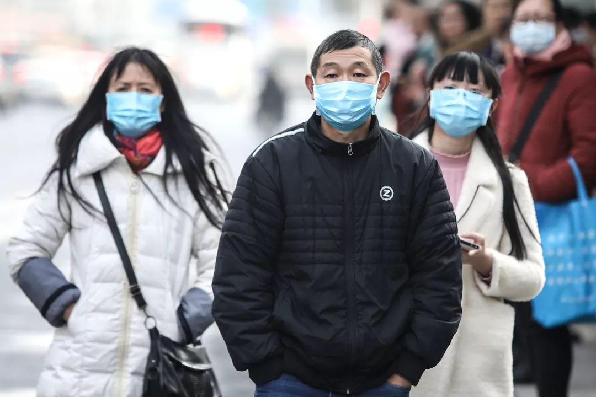
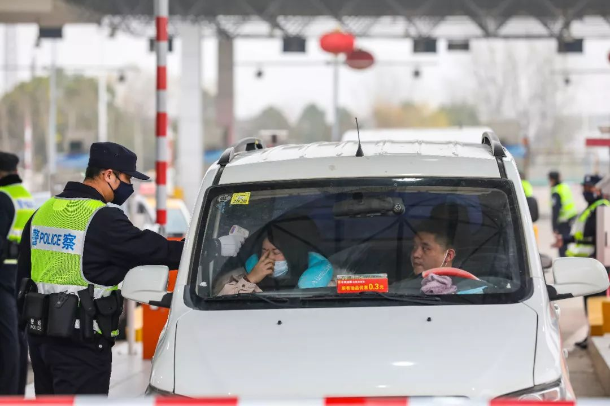

武汉不设防
原文链接 备份链接 17 年前的那场公共卫生危机，未能及时公开疫情成为事后被诟病最多的问题之一，也成为中国疾病防控系统以及政府信息公开等许多方面的重要转折点。 而多年后，越来越多的互联网官方渠道成为了重大事件的定海神针，「官宣」被普遍接 …
张文宏接受本刊记者采访时，已经是今日凌晨1点。作为复旦大学附属华山医院感染病科的主任，张文宏刚刚到河南，随国家卫健委督查组考察河南的疫情防控措施的落实。华山医院感染科是全国最强的科室，作为本领域的带头人，疫情发现之后，张文宏被任命为上海市新型冠状病毒肺炎医疗救治专家组组长。
张文宏说，目前全国的防控，武汉需要迅速解决已经出现的问题，其他城市和地区打的则是保卫战。这个时候比的不是勇气，而是理性、耐心和科学。武汉在应对疫情上有很多教训与经验，其他地方必须慎重参考，避免成为第二个疫情高发地区。
记者 | 王珊
《三联生活周刊》：从1月23日开始，武汉采取封城措施，您如何看待这个举措？
张文宏：武汉现在病人体量太大，是个大的传染源，目前国内各地乃至其他国家出现的病例，很多病人在被确诊之后，都发现跟武汉有相关接触。所以武汉的情况如果不解决，其他地方是没有办法控制住的。另一个现实是，整个中国很大，在传染病应对上，不可能每个城市、区县都能够做到北京、上海等大城市的水平，如果不控制住武汉的疫情，有可能导致全国性的蔓延。
武汉疫情爆发以后，导致恐慌出现，形成人群大量聚集，为交叉感染创造了条件。武汉本身也需要迅速解决已经出现的问题。对于传染病来说，切断传播途径是非常重要的解决办法，再高的发病率，通过物理上的交通管制，必能切断实际上的传染病扩散。此时对武汉，采取封城这样的措施是一个快速切断传染源的有效措施。

远征 摄
武汉疫情不控制，全国的疫情控制就不能得到保证。但这个并不是说国家要牺牲武汉保护其他地方，封城也可以最大限度地防止新型冠状病毒在武汉内部的蔓延。
对于武汉来讲，抗击新型冠状病毒，是一场战役，是硬仗。
《三联生活周刊》：根据通报，截至1月26日19时：全国30个省（区、市）累计报告新型冠状病毒感染的肺炎确诊病例2051例，死亡56例。您如何看待患者这种激增情况？
张文宏：从总体数据上来说，全国大部分地区发病数据激增，很多是在武汉原来堆积的病例，以及一代病例再传播派生出的二代与三代病例。
疾病爆发之初，看到病例大多来自华南海鲜市场之时，这一情况没有得到重视，导致疫情继续蔓延，当很快出现的系列聚集性发病案例的时候，已经到了处置武汉疫情的关键节点。
因为只要出现人传人之后的二代病例和三代病例，疫情就标志着进入第二阶段。这个阶段时间越长，则残余病例数量越大。从病毒传播的发展进程来说，武汉可能还有潜在传染病未被发现。

武汉在处置上面有很多的教训和经验，其他省份或地区必须慎重参考，不然可能就是第二个武汉。对于武汉来说，这也是一个新发的传染病，特点跟以往也不一样。现在看来，武汉的整个处置上缺乏早期的科学管控意识，疫情的应对需要专家的迅速介入和评判。国家卫健委的思路就很明确，六个院士、专家进驻专家组，还有其他专家，大家联合制定方案。本来以为2003年非典之后我认为各个地区在应对传染病上已经有了相应的经验教训，现在看来，其实未然。
2003年我也在非典一线，非典也经历了很长的时间，当时的问题在于找不到病原体，找到之后，后续的应对来说就非常快了。某种程度上来说，这次新的病毒，虽然发现得早，但病例传播速度快，应对起来似乎比非典更为困难。
《三联生活周刊》：其他地区应该如何警示“二代病例”？
张文宏：当某一个城市的不明原因肺炎中出现新冠病毒，而且源头不清的时候，预示着该城市已经失去了初期防控的黄金窗口，可能要进入二代病例传播的持久战阶段。
现在所有的病例我们都能找到传播的路径，即现在可以找到传染给他的那个人。比如说我们现在外地发现的病例，能找到他在武汉待过，或者跟武汉接触的线索。但如果在另外一个地区，我们找到一个病人，却确定不了他的传染源，即可说明出现一个显著的二代病例。换句话说，就是这个地区内部之间已经出现人传人的状况。这意味着疾病进入新的阶段，这是很可怕的，意味着一个传播链的形成。这个阶段可以在病例出现爆发时候发现，也可以通过主动监测来完成。准备采取何种方式进行防疫，纯属城市管理者的见仁见智。

远征 摄
武汉外的其他地区产生二代病例是可能的，这也符合病毒本身的传播规律，新型冠状病毒已经显现出了很强的人传人的特征，问题是现在是否能即时控制，即发现一个，诊治一个，解决一个。新型冠状病毒比较隐蔽，它表现出来的症状不是很重，有一段的潜伏感染时间，这期间可能发生传染。现在整个的国家的体系对这个病毒提高了警惕性，在疾病病症很轻时就去查，可以阻断病毒的进一步传播。
所以，我想说的是，目前全国形势的防控，武汉打的是一场大决战，其他地区和城市打的则是保卫战。这个时候比的不是勇气，而是理性、耐心和科学，这是一个比较长期的持久仗。武汉很困难，其他输入病例城市将面临更大挑战。
《三联生活周刊》：其他输入病例城市病例数不多，为什么将面临巨大挑战，这个怎么理解呢？
张文宏：大家观测到的新型冠状病毒的潜伏期一般是2周左右。现在武汉实行定点收治，又在建设新的定点医院。全国各地的医护援助力量都已经相继到位，通过对所有发病患者的收治，不出2周，武汉实报病例应该能出现拐点。武汉战役的结局已经没有疑问，武汉的老百姓和其他地方处于惶恐中的大众，要对这场战役有信心。
全国各个省市相继通报病例，这个时候，如果当地提高了警戒的水平，蔓延就会被阻断，如果继续蔓延的话，再做控制就会很难。因此，当前武汉外的城市，必须老老实实地做好病例筛查，迅速确诊，精确分检，该隔离隔离，该回家回家。当地政府严格按照流程去实施疫情管理。

疫情的初期，在没有发现二代病例的阶段，应对所有潜在的输入性病例进行迅速有效的筛检，这个阶段怎么投入都不会白费。所在省市有条件者可以对武汉来源之外的不明原因肺炎进行病原学的监测，明确是否已经有武汉二代或者三代病例在本地形成传播循环。一旦发现，则标志抗疫时间要延长，所在城市进入持久抗疫阶段。
还要需要注意的问题是，当前很多城市的诊断试剂虽然已经到位，但是诊断时间不及时，假阳性假阴性病例可能也不少，临床采样不规范也会影响检测结果。凡此种种，均有可能造成输入性病例的继续传播，继而产生二代病例和三代病例。
对于武汉外的其他城市来说，卫生管理层和城市管理层面临一场大考。武汉以外其他城市管理层，目前面临的正是武汉2019年12月底同样的问题，如果可以重来，在疾病的初期应如何抗击这场新发传染病？

《三联生活周刊》：这其实还是讲，要把整个应对的体系捋顺。
张文宏：对的。事实上就要看这段时间，各个地方是不是能够建立一套有效的发现、治疗、诊治疾病的控制体系，能否迅速地把这个机器给建起来。如果机器建起来，即使相继出现病例，问题不大，哪怕是出现一个小规模的爆发，也能够应对。因为这个体系已经完整了，诊断也是完整的，病毒来一个、解决一个，我是比较乐观地看待这个事情。但如果这个时间，各个地方没有根据要求建设这套体系，它可能就会出现爆发。
《三联生活周刊》：这次疫情的防疫，我们还需要反思哪些方面？
张文宏：在应对传染病上，目前针对特殊的传染病必须依靠疾控来做确诊，但疾控中心的确诊又要花很长的时间，在新发传染病的确认上，这很不利于医院对疑似病人的处置。医院和疾控如果配置不好，会对病人的诊断造成极大的延误，造成病人群体滞留，达不到分流的目的，患者堆积在医院，造成第2轮的传播，这次武汉的爆发，也是反映了这个问题。即使医院有检测的能力，也要在疾控的管理之下。两者的关系是以后需要思考的。

面临这种情况，其他地区医院和疾控中心之间就要密切合作，必须要迅速增加人手，快速反应。这件事给我们的反思是，是否要将确诊的权力交给医院，疾控只做疾病控制。这并不只是一个权力的移交，要考虑的问题很多，前提是要把医院的检验水平提高，建设相应的检测实验室。每次教训之后，都会推动进步。非典之后，整个中国疾控系统变得强大了。经过这次的改进以后，我们希望医院传染病的防控体系能够得到进一步的提高。
另外就是分级处理的问题。面对传病疫情，要做明确的科学应对指南，即哪些病人需要进入医院，哪些病人只要在社区医院或者家里自我隔离就行。无论有无去过武汉，只要发热就都挤到了医院里，挂号就要四五个小时，看病又要时间，检验和取药又要大量时间，这种不分青红皂白扎堆看病，只会影响疫情的处理和加重交叉传播。
作者档案

**王珊
**
喜欢阳光，喜欢晒太阳，最近喜欢易建联。
26分钟前


三联生活周刊
个人微博：@小笨走走停

#我在疫情一线#
话题征稿持续进行中
《三联生活周刊》全媒体现面向所有读者征稿。包括但不限于：奋斗在疫情一线的医护人员、媒体同行们的故事，专业人士对接下来防疫工作的建议……
此次征稿形式不限：文字（1500～2500字为佳）、图片（原创拍摄）、音频视频（原创录制）都欢迎。大家携手，共度难关！注：请务必保证故事真实、客观，不造谣、不传谣。
《三联生活周刊》微信公号投稿邮箱：zhuangao@lifeweek.com.cn来稿格式：#我在疫情一线#➕标题《三联生活周刊》官方微博参与话题：#我在疫情一线#《三联生活周刊》中读APP投稿邮箱（音频投稿为主，5分钟以内为佳）zhongdu@lifeweek.com.cn
期待你的来稿！
⊙文章版权归《三联生活周刊》所有，欢迎转发到朋友圈，转载开白请联系后台。未经同意，严禁转载至网站、APP等。
长按二维码向我转账
受苹果公司新规定影响，微信 iOS 版的赞赏功能被关闭，可通过二维码转账支持公众号。
原文链接 备份链接 17 年前的那场公共卫生危机，未能及时公开疫情成为事后被诟病最多的问题之一，也成为中国疾病防控系统以及政府信息公开等许多方面的重要转折点。 而多年后，越来越多的互联网官方渠道成为了重大事件的定海神针，「官宣」被普遍接 …
原文链接 备份链接 随着疫情消息的增多，各种关于其来源、如何传播与防控的“传言”也接踵而来。为此，我们采访了相关领域的专业人士，试图解答十个公众最为关心的问题。 记者 | 许冰清 肖文杰 倪妮 张云亭 项维肖 毛怡玫 实习记者 | 文思 …
原文链接 备份链接 随着疫情消息的增多，各种关于其来源、如何传播与防控的“传言”也接踵而来。为此，我们采访了相关领域的专业人士，试图解答十个公众最为关心的问题。 记者 | 许冰清 肖文杰 倪妮 张云亭 项维肖 毛怡玫 实习记者 | 文思 …
原文链接 备份链接 【财新网】（记者 黄蕙昭）一则半夜发布的“封城”通告惊动全国，也拉开武汉肺炎防疫之战新势态。1月23日凌晨两点，武汉市新型冠状病毒感染的肺炎疫情防控指挥部通报宣布，今日10时起，武汉公交、地铁、轮渡、长途客运暂停运 …
原文链接 备份链接 新型冠状病毒感染肺炎疫情扩大。武汉本地两天新增确诊136例，死亡1例，治愈出院6例。 北京大兴区新增2例，有武汉旅行史；广东深圳新增1例，曾到武汉探亲。这是内地首次在武汉之外的城市报告病例。 国家卫健委卫生应急办 …